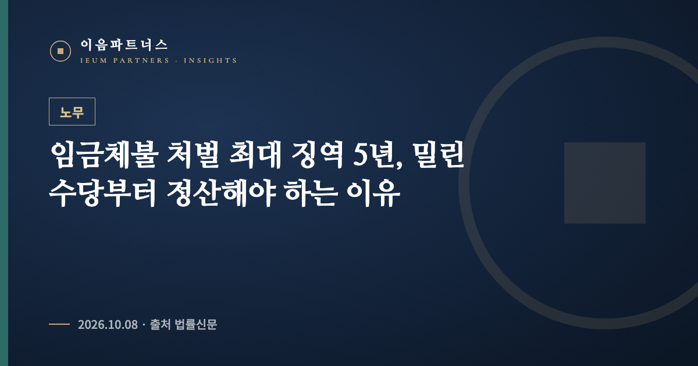

임금체불 처벌 최대 징역 5년, 밀린 수당부터 정산해야 하는 이유

2026년 10월 8일부터 임금을 제때 주지 않은 사업주에 대한 처벌 상한이 크게 올랐습니다. 월급뿐 아니라 연장·야간·휴일 가산수당, 휴업수당, 퇴사 뒤 정산금까지 모두 해당합니다. 이 글에서는 바뀐 처벌 기준과 대상, 그리고 2027년까지 잇따라 시행되는 노동법 일정을 정리합니다.
처벌은 체불이 생긴 시점의 법을 따르기 때문에, 지금 남아 있는 미지급 임금을 어떻게 정리하느냐가 중요합니다. 우리 회사에 밀린 수당이 있는지 확인이 필요하다면 카카오톡 채널 이음파트너스로 물어보셔도 됩니다.
무엇이 바뀌었나
개정 근로기준법(2026년 4월 7일 공포)에 따라 임금체불 법정형(법이 정한 처벌의 범위) 상한이 높아졌습니다(법률신문). 퇴직금 체불은 이보다 앞선 2026년 9월 18일부터 같은 기준이 적용되고 있습니다(법률신문).
| 구분 | 내용 |
|---|---|
| 처벌 상한 | 3년 이하 징역 또는 3천만 원 이하 벌금 → 5년 이하 징역 또는 5천만 원 이하 벌금 |
| 시행일 | 임금 2026년 10월 8일, 퇴직금 2026년 9월 18일 |
| 해당 위반 | 퇴사 뒤 금품 정산(제36조), 임금 지급(제43조), 휴업수당(제46조), 연장·야간·휴일 가산수당(제56조) 등 |
| 합의의 효과 | 직원이 처벌을 원하지 않으면 기소할 수 없는 반의사불벌 구조는 유지 |
이미 밀린 임금은 어떻게 되나
형벌은 행위 당시의 법을 따르므로, 새 처벌 기준이 적용되는지는 임금 지급기일(줘야 했던 날)을 기준으로 판단될 것으로 보입니다. 법률신문은 “이미 지급기일을 도과한 미지급 임금이 있다면 조기 정산을 검토하시는 것이 바람직합니다”라고 조언했습니다(법률신문).
특히 놓치기 쉬운 것은 월급이 아니라 수당입니다. 연장근로가 잦은데 가산수당을 따로 계산하지 않았거나, 휴업 기간에 휴업수당을 주지 않았다면 그 부분도 체불이 될 수 있습니다.
앞으로 1년, 시행일을 놓치지 마세요
임금체불 처벌 상향은 시작일 뿐, 2027년 상반기까지 노동법 개정이 거의 매달 시행됩니다. 상당수는 취업규칙에 반영하지 않아도 시행일부터 바로 적용되므로 날짜 순서대로 점검하는 것이 좋습니다(법률신문).
| 구분 | 내용 |
|---|---|
| 2026년 11월 4일 | 위험성평가 지침 전부개정(시행 중): 작업 전 평가, 일정 사전 공지, 결과 공유 |
| 2026년 11월 27일 | 직장 내 성희롱 과태료 대상에 법인 대표자·친족 확대, 난임치료휴가 유급 4일 |
| 2026년 12월 10일 | 4시간 근무일에 근로자가 명시적으로 요청하면 휴게시간 생략 가능 |
| 2027년 1월 1일 | 위험성평가 과태료(50인 이상), 공공 도급사업 임금 구분지급 |
| 2027년 1월 28일~ | 개정 산업안전보건법 단계적 시행(작업중지 범위 확대 등) |
| 2027년 6월 10일 | 연차휴가 분할 사용, 연차 사용 이유 불이익 금지 |
대표님이 지금 확인할 것
- 지급기일이 지났는데 아직 주지 못한 임금·수당·퇴직금이 있는지 목록으로 정리하기
- 연장·야간·휴일근로 시간이 기록되고, 그 시간대로 가산수당이 계산되는지
- 퇴사자 금품 정산이 늦어지는 일이 없는지
- 위 시행일 순서대로 취업규칙·근로계약서·내부 절차를 손볼 일정을 잡기
참고한 자료
- 매달 바뀌는 노동법, 시행일 놓치면 과태료·형사처벌 — 법률신문 (2026.11.12)
- 2026년 하반기 인사·노무 관련 법령 주요 개정 사항 — 법률신문 (2026.09.28)
밀린 임금은 시간이 지날수록 지연이자와 처벌 위험이 함께 커집니다. 우리 회사 미지급 항목을 정리해 보고 싶다면 카카오톡 채널 이음파트너스로 문의해 주세요.
※ 이 글은 일반적인 정보 제공을 위한 것으로, 개별 사안은 세무사·노무사 등 전문가와 함께 확인하시기 바랍니다.